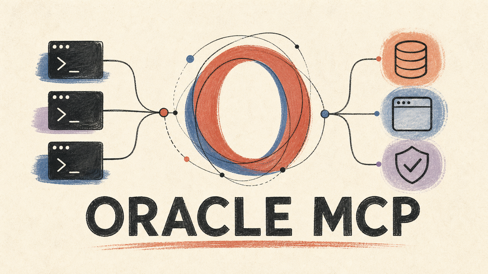
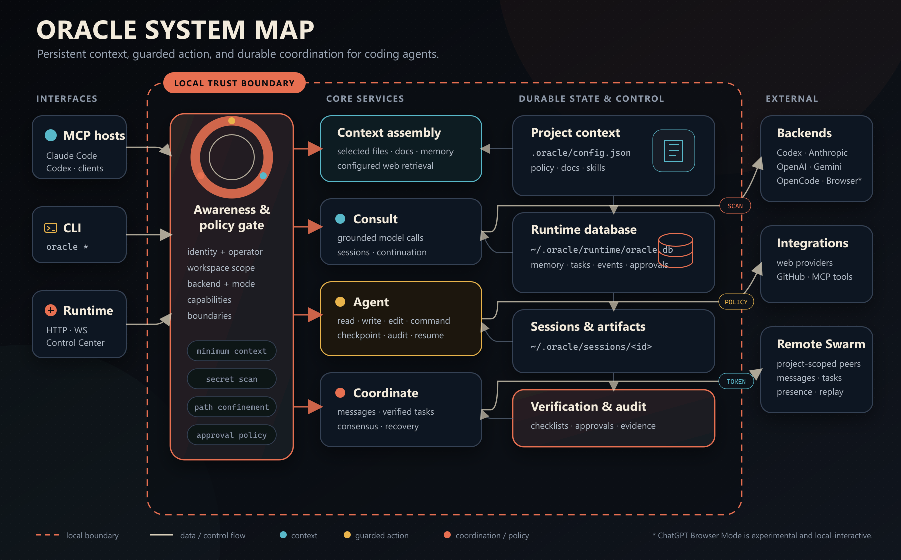

Oracle connects Claude Code, opencode, Gemini CLI, Codex, and custom AI agents into a single, cohesive teammate that remembers past context, coordinates multi-agent swarms, and verifies work.

Oracle is built upon the foundational vision, architecture concept, and open-source prototype created by Peter Steinberger (@steipete) at github.com/steipete/oracle. We express our deep appreciation and gratitude to Peter for inspiring this persistent coordination layer for AI coding agents.
How agents, persistent stores, backends, outbox messaging, and human control connect.

Agents (Claude Code, opencode, Gemini) wire into Oracle via MCP stdio servers (`oracle-mcp` / `oracle-msg-mcp`).
Queries dynamically synthesize context from local memory graph, workspace files, local docs, and live web search.
Consultations route to Codex CLI, Anthropic, OpenAI, Gemini, or Experimental ChatGPT Browser Mode with self-healing reload.
SQLite outbox records messages, heartbeats, and task state transitions, ensuring safe recovery and remote agent sync.
A unified layer engineered for agent autonomy, persistence, and safe human oversight.
Persistent memory graph across sessions with ML-ranked retrieval (recency, access frequency, semantic match) and background tag consolidation.
oracle_memory_*One-shot Q&A engine grounded in workspace code files, memory graph, local knowledge base, and real-time web search with citations.
oracle_askAutonomous coding sandbox loop (`oracle agent`) that reads/writes files and runs policy-checked workspace shell commands with full audit logging.
oracle_agentTransactional SQLite message bus for local and multi-machine Remote Swarm agent communication with real-time wake-up triggers.
oracle_msg_*Checklist-gated task lifecycle. Agents cannot mark tasks "done" until every declared checklist item is empirically verified.
oracle_task_*Persistent background daemon managing SQLite state, authenticated APIs, Remote Swarm WebSocket relay, and Cron Scheduler.
oracle daemonHuman control center featuring real-time Web Dashboard and terminal Ink TUI for approval inbox, task boards, and audit history.
oracle controlGet up and running with Oracle in less than two minutes.
Detailed guides covering every aspect of the Oracle ecosystem.
| Document | Description |
|---|---|
| Getting Started | Installation, configuration, and environment setup checklist. |
| CLI Reference | Single-page reference for every `oracle` subcommand and flag. |
| Browser Mode | Setup, self-healing UI reload, CDP retries, and native continuation. |
| Architecture | System components, execution backends, SQLite outbox, and data flow. |
| Agent & Sandbox | Autonomous coding loop, toolset, sandbox hardening, and audit trail. |
| Messaging & Task Tracker | Inter-agent bus, presence heartbeats, wake-up tiers, and verification gates. |
| Runtime Daemon | Long-lived daemon, SQLite outbox, local API, and WebSocket events. |
| Remote Swarm | Cross-machine agent coordination, scoped tokens, and replay logs. |
| Control Center | Web Dashboard, Ink TUI, approval inbox, and scheduler management. |
| ACTB Governance Spec | Awareness, Control, Transform, Boundary agent alignment architecture. |